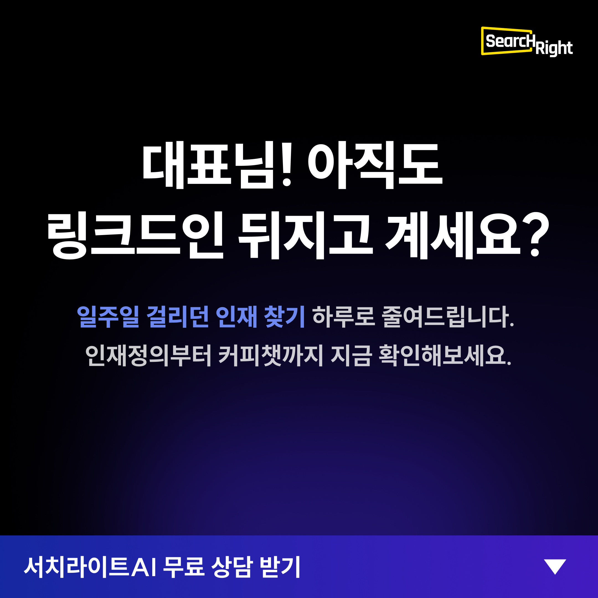
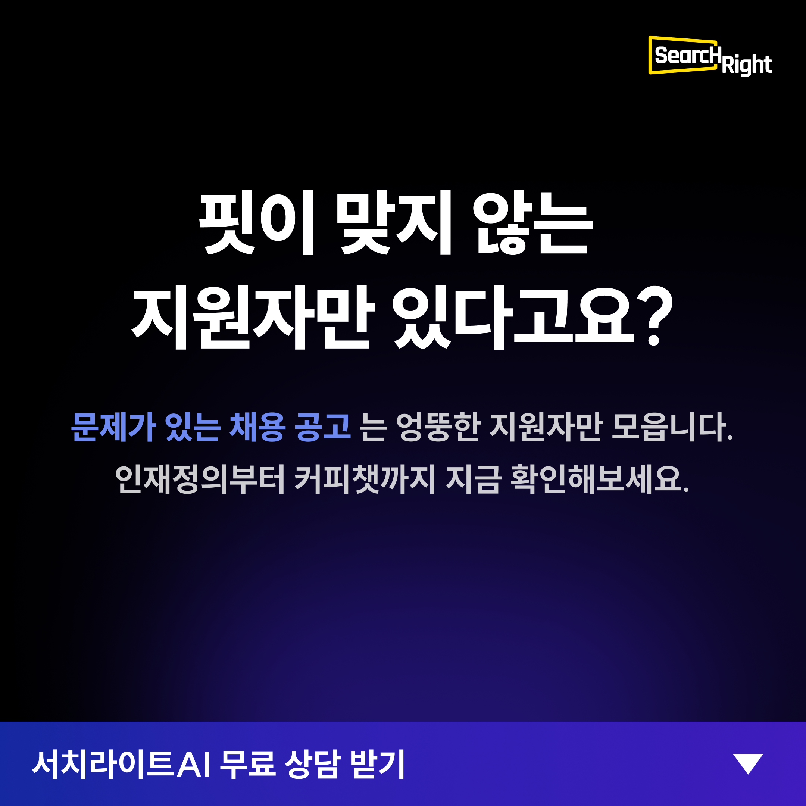
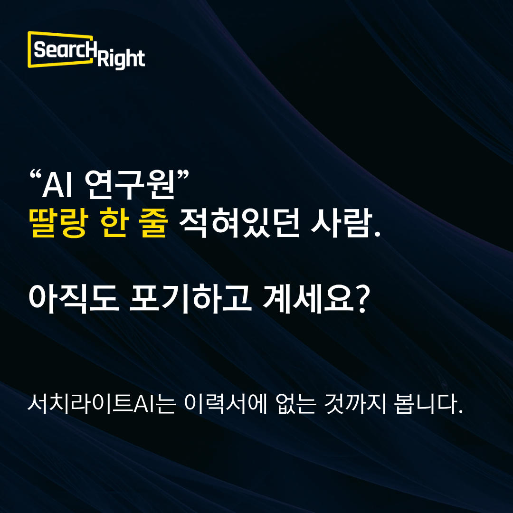
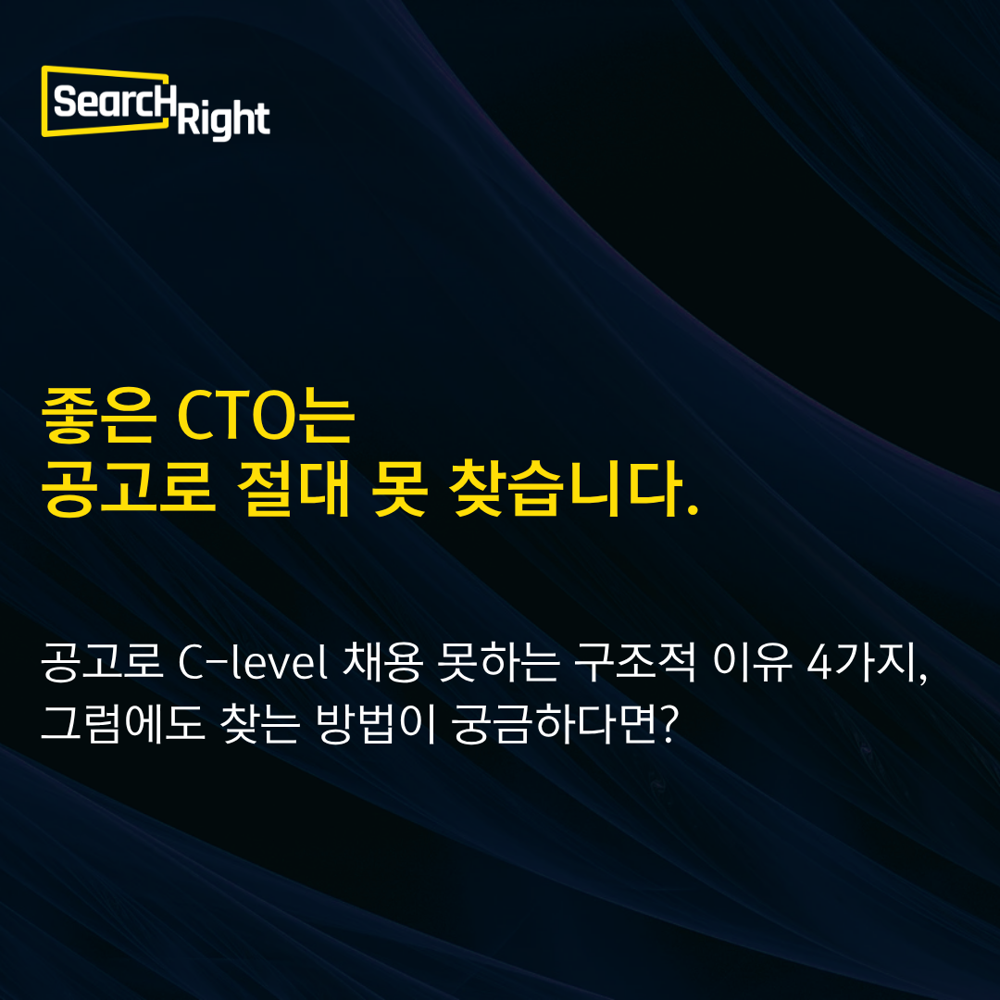
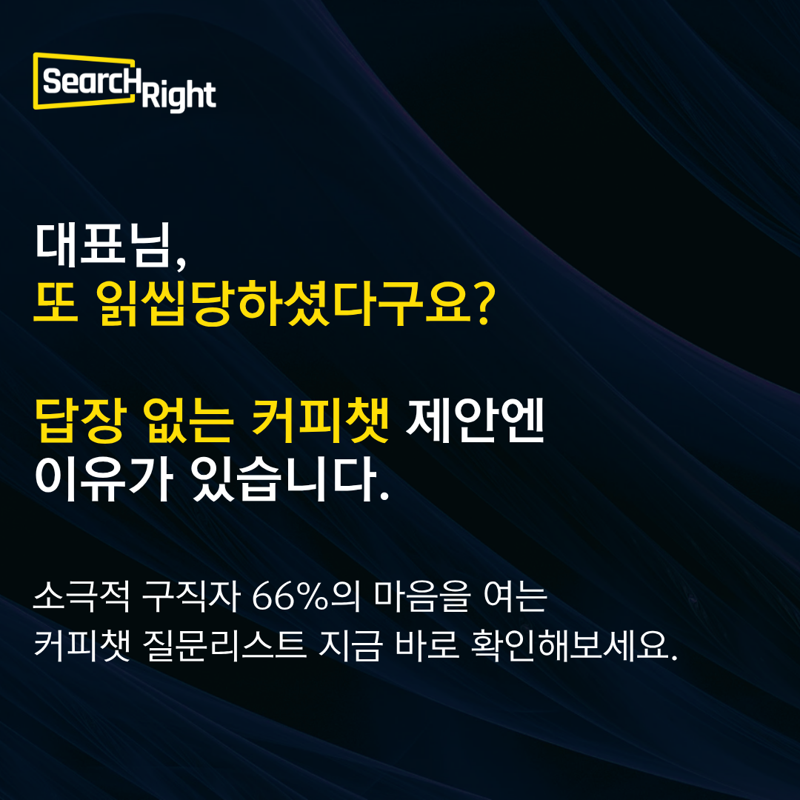

B2B SaaS 스타트업에서 콘텐츠부터 퍼포먼스까지, 아무것도 없는 상태에서 직접 만들었습니다.
서치라이트AI(B2B AI HR Tech 스타트업)에서 마케팅을 전담하고 있습니다.
블로그 콘텐츠 기획부터 SEO 전략, 퍼포먼스 광고 세팅, GA4 데이터 분석까지
마케팅 인프라가 없는 상태에서 직접 세팅하고 운영한 경험이 있습니다.
특히 "트래픽은 나오는데 전환이 안 되는" 문제를 진단하고,
가설 수립 → 소액 테스트 → 데이터 기반 판단의 사이클을 돌리는 데 집중합니다.
관심 도메인: 게임 · 콘텐츠
기획부터 실행, 분석까지 전체 과정을 담았습니다.
트래픽은 나오는데 리드가 0 — 전환 캠페인을 처음부터 재설계하다
영상 소재로 Meta 광고를 집행했더니 트래픽은 잘 나왔다. CTR 1.5~2.3%, 주간 유입 1,500명. 하지만 문의(리드)는 단 한 건도 없었다. "트래픽 ≠ 전환"이라는 문제를 직면하고, 리드를 만들기 위한 채널·소재·퍼널을 처음부터 재설계하기로 했다.
영상 소재가 인지/흥미 유발에는 효과적이지만 전환 의도가 약했다. Meta 단일 채널 의존 + 검색 의도 유저 미확보 + 랜딩→문의 퍼널 미검증이 복합 원인.
본예산 300만원 투입 전, 35만원(1주)으로 3채널 동시 검증. Google RSA(검색 의도) + Meta 제품 소구점 + Meta 블로그 소구점. GDA는 소액 예산 분산 시 채널당 데이터 부족으로 제외 판단.
페르소나(스타트업 대표, HR 없이 직접 채용) 기반 소구점 3축 도출: 시간("아직도 링크드인 뒤지고 계세요?") / 품질("또 잘못 뽑으면 3개월 날립니다") / 비용("서치펌 수수료가 아깝지 않으세요?"). 블로그 콘텐츠 3편도 별도 광고 소재로 제작.





Google Ads RSA(헤드라인 14개+설명 4개), Meta 전환 캠페인 2개 세팅 완료. GA4+Pixel+CAPI 전환 추적, UTM 체계 설계. 1주 후 판단 기준: CPL ≤ 7만원, CTR 1개 이상 1.5%+, 퍼널 정상 작동.
캠페인 구조 설계, 타겟 설정, 소재 기획 완료
소재 업로드, 퍼널 점검, 3채널 동시 라이브
채널별 CPC/CTR 기록, 이탈 지점 식별
블로그 Top 5 선별, 전환율 개선 아이디어 우선순위
Go/No-Go 사전 점검, 보고 초안, 다음 주 예산 배분 시나리오
5개월간 76편 발행 — SEO/GEO 전략으로 검색 유입 구축
B2B AI HR Tech 스타트업의 브랜드 인지도 0. 검색 유입이 없고, 잠재 고객이 서비스를 발견할 경로가 없는 상태.
SEO/GEO 키워드 전략을 수립하고, HR/채용 도메인 콘텐츠를 체계적으로 기획·작성·발행. Ghost CMS 기반 블로그 운영, 4채널 배포(LinkedIn, 브런치, 네이버, 이오플래닛), 콘텐츠 성과 추적 체계 구축.
HR/CEO 타겟 분리 운영으로 소재 톤 벤치마크 수립
B2B SaaS 리드 확보를 위한 LinkedIn 광고. HR 담당자와 CEO/C-Level이라는 서로 다른 의사결정자에게 동시에 도달해야 하는 상황.
캠페인 A(JD Creator, HR 타겟)와 캠페인 B(C-Level 인재 샘플, CEO 타겟)를 분리 운영. 소재 톤(enforce vs soft) A/B 테스트 진행. Lead Gen Form 최적화.